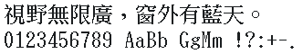

字样资料 / HP Sung
HP-UX 繁体宋体 · 24×24
CNS平面1／2经EUC-TW映射含13,064个非空U+3400–9FFF汉字；Python Big5的13,061汉字中同Unicode覆盖13,060。“彝／彞”为映射差异，不互换；同源95个可打印ASCII。 · 24×24 · 繁体
放大观察 · 3×

原尺寸 · 1×
来源与字样信息
- 家族
- HP Sung
- 排版说明
- 两行固定样文，四周4px、行间4px；中文原字框24×24，ASCII 12×24，保持PCF度量。空格保留原advance，无额外字间距。
- 字符框
- 24×24 px
- 字符范围
- 繁体
- 样本文字
- 視野無限廣，窗外有藍天。
- 拉丁样文
- 0123456789 AaBb GgMm !?:+-.
- 覆盖说明
- CNS平面1／2经EUC-TW映射含13,064个非空U+3400–9FFF汉字；Python Big5的13,061汉字中同Unicode覆盖13,060。“彝／彞”为映射差异，不互换；同源95个可打印ASCII。
- 缺字
- 样文无缺字
- 样张类型
- 原生CNS平面1／2汉字与同源半宽西文，不缩放、不补字。
- 风格
- 宋体
- 用途
- 操作系统
- 字形来源
- 静态读取B7994-10045第2盘中的原生PCF；1994为字体版权标记，2005为本次原盘发行标记，不等同首次设计日期或证明手工制作。
- 授权状态
- 未确认开放再分发授权
- 许可说明
- PCF标注Copyright (c) 1994 Hewlett-Packard Company。公开存档不等于开放许可；仅展示固定PNG与无字模重绘方法，不附PCF、完整BDF或光盘。
- 说明
- CNS11643.1992平面1/2与ISO646.1991-IRV分别保留；同Unicode覆盖与编码变体分开，不以低精确重合率推断原创。完整历史参考覆盖边界见审计。
- 获取方式
自行确认使用权后从对应原盘取得PCF。本仓库只附固定样文离线重绘工具，不授予字体商用或再分发权。
- 来源
- HP-UX 11i 2005年9月原盘存档资料页
- 原生证据
说明：原PCF固定SHA、CNS平面及同源ASCII；独立位级核验见HP-UX审计。
copyrightYear：1994
hanUnicodeCount：13064
big5HanCovered：13060
big5HanTotal：13061
asciiWidth：12
fontAscent：22
fontDescent：2
字体使用与再分发按原来源许可执行。